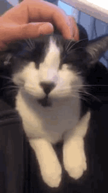
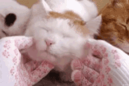

HOW TO PET YOUR CAT ?

STEP 1

Start with a soft chin-scratch :
Use your fingertips or fingernails to gently rub the chin, particularly where the jawbone connects to the skull. It's possible the cat will push into your stroke or jut out their chin, both signs of enjoyment.
STEP 2
Focus on the area between or behind the ears :
Use the pads of your fingers and apply gentle pressure. The base of the ears is another scent-marking spot for cats. If they bump their head against you (called "bunting"), they are marking you as theirs.
STEP 3
Run the back of your hand gently along the side of the face :
Once the cat is warmed up, use your middle finger to stroke the cat's "mustache" (just above the upper lips) while encircling their whole face and stroking the top of the head with your thumb. The cat is yours.
STEP 4

Stroke the cat from forehead to tail :
Pet the forehead, then run your hand from forehead to the base of the tail, going from head to tail repeatedly. Massage their neck muscles by pinching gently. Apply gentle pressure and make it a continuous, slow motion. Work only in one direction (forehead to tail), as some cats do not like back-to-front strokes.
- Don't touch the tail or move your hand along to the side.
- If the cat likes what you're doing, they'll arch their back to add more pressure to your hand. When you bring your hand back to where you started, the cat may rub their forehead firmly against your hand to encourage you to do it again. If the cat puts their ears back, cowers away from your hand, or just walks away, stop petting.
- You can scratch gently as you bring your hand down along the cat's back, but don't stop at one spot and scratch there. Keep your hand moving.
- Apply a little pressure at the base of the tail, though with caution. This is another scent gland area, and there are cats that like getting scratched right here.Others, however, have a habit of suddenly snapping their teeth at your hand when they've had enough.